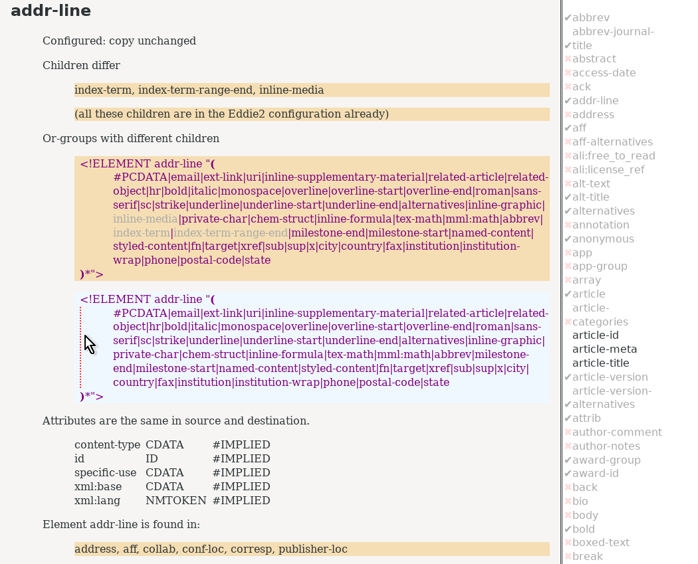

Although Eddie 2 has been described elsewhere in some detail, the point of this paper is to describe the philosophy of making tools, so we will take a different approach, and describe its evolution.
In the first instance, the author needed to identify structural differences between two versions of the JATS DTD. This is a fairly large vocabulary, and two organizations that needed to interchange documents each had made their own variation on it.
The first version of Eddie 2 used a DTD parser module in Perl; the XML support in Python at the time did not seem to report DTD events such as finding element or entity declarations. The first version took a few hours to write and get working satisfactorily.
Once Eddie 2 was producing useful output, and could handle parameter entities more helpfully than other dtd-diff tools, the next step was to generate an XSLT stylesheet to handle each element that might appear in the input, simply copying it to its output and producing a message that it had been seen.
Including this XSLT and processing the sample documents available meant that the most frequently-occurring elements could be handled first; this meant the number of validation errors in the output reduced very quickly.
Since Eddie 2 made an HTML report, it was easy to add to this a list of elements that were in a configuration file Eddie 2 read, and to highlight whether the elements had the same content model and attributes in both DTDs, or whether they differed.
This list, shown on the right-hand side in Figure Figure 5, “Eddie 2 Report”, can also be used as a sort of to-do list: any elements that differ between DTDs and are not handled in the XSLT or in the configuration file are marked with a red X. Eddie 2 also reads the XSLT file to check for coverage, and warns if there are such elements with no template to match them in the main stylesheet.
Figure 5. Eddie 2 Report
|  |
The Eddie 2 tool has proven to be highly effective in helping people write this sort of transformation between similar DTDs. Because it depends on some Perl modules, it can be a little tricky to install; a replacement written entirely in XSLT is waiting for a project to come along and fund its completion.